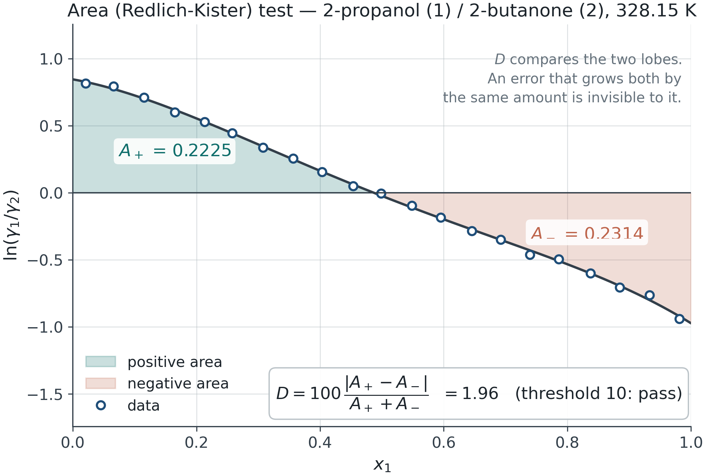

Session 2 · optional reference
30 September 2026
Return to the 12-slide classroom deck.
Use these details when a question from your investigation needs them. They are outside the required 45–60 minute practice.
Choose one extension: a controlled consistency defect in Lab 03, a fixed held-out comparison, bootstrap fit spread, or your own sourced VLE data. Exact synthetic bootstrap spread does not quantify real measurement uncertainty.
Measured T, P, x and y → pure-component vapor pressures → inferred activity coefficients → consistency diagnostics → regression → prediction within a stated domain.
Each arrow adds assumptions. A fitted curve does not remove errors introduced earlier.
A common form is \log_{10}P^{sat}=A-\frac{B}{T+C}
A, B and C belong to a specific equation, logarithm base, T unit and pressure unit. Lab 08 supports several forms; changing the selection does not convert constants.
Check Pˢᵃᵗ at one measured temperature and verify the source range.
At constant T and P for a binary liquid, x_1\,d\ln\gamma_1+x_2\,d\ln\gamma_2=0
A VLE path may change P or T. Pressure/excess-volume and temperature/excess-enthalpy terms need appropriate treatment or an explicit approximation.

At approximately constant P, \sum_i x_i\,d\ln\gamma_i=-\frac{h^E}{RT^2}\,dT
Independent excess-enthalpy data can support the temperature correction. An empirical range correction does not replace measured hᴱ.
Missing endpoints require an explicit extrapolation assumption.
Lab 08 minimizes the mean of \left(100\frac{P_{pred}-P_{obs}}{P_{obs}}\right)^2+[100(y_{pred}-y_{obs})]^2
Compare one-parameter Margules, two-parameter Margules and NRTL on the same rows. NRTL α is fixed. This objective has no measurement-uncertainty weighting.
A lower scalar error may accompany biased residuals near an endpoint or a narrow temperature interval.
Compare residuals against composition and temperature. Report parameter bounds and temperature convention.
Lab 08 compares three models on one fixed held-out split. Its pairs bootstrap reports conditional fit spread, not a new-measurement prediction interval.
A single-temperature fit supplies composition dependence at that temperature. It does not establish dγ/dT.
A VLE fit need not identify LLE accurately. Similar VLE residuals can conceal different liquid Gibbs-energy curvature.
Session 3 adds stability and liquid coexistence evidence.
Module reference deck · Lab assumptions and sources
The worked examples use synthetic inputs. Each lab states its supported models and validity limits.